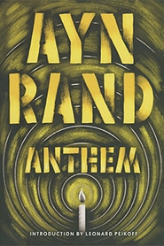

Author: Ayn Rand
Genre: Fiction/Dystopian Society
Theme: Indiviualism, the importance of the individual
Setting: Post-Apocalyptic, Sometime in the Future
Vocabulary
Anthem-a song of praise and patriotism
apocalypse-universal destruction or disaster
post-apocalyptic-civilization where a disaster ruins the world
council-a group of people who come together to consult, deliberate, or make decisions
dystopian-a society that is frightening, "not-good place", antonym of utopia
eugenics-social movement claims to improve the genetic human populations through selective breeding and sterilization
individual individualism-a social theory favoring freedom of action for individuals over collective or state control
pledge-a solemn promise or undertaking
preference-a greater liking for one over another or others
scholars-specialist in a particular branch of study
transgression transgressor-an act that goes against a law, rule, or code of conduct; an offense
uncharted-unexplored, undiscovered, unknown
utopian-a community or society possessing highly desirable or near perfect qualities
vocation-employment, occupation or profession

Anthem--Chapter
I
Summary
The main character, Equality 7-2521 describes the society of Anthem. Equality has discovered an old subway tunnel from the Unmentionable Times. Equality keeps the tunnel a secret. He visits the tunnel to conduct scientific experiments and to write only for himself.


Main Character and Narrator

Bracelet
The Unmentionable Times
The Great Re-Birth
Beginning of the Anthem Society
The World Council
“the body of all truth” (page 19)

Palace of Corrective Detention
Jail or Prison
The Old Ones
the older citizens who have some knowledge of life before the Great Re-Birth
Ancient Ones
“when a miracle happens and some live to be forty-five, they are the ancient Ones and children stare at them.” (page 28)

Home of the Infants (Page 20)
Home of the Students (Page 20)
The Pledge (Page 21)
Home of the Useless-(Page 28)
Council of Vocation (Page 22)
Transgression of Preference
Council of the Scholars (page 23)
The Social Meeting (Page 27)

The City Theatre (Page 28)
Chapter II
(2)
|
2.2 |
“We wish to write this name. We wish to speak it, but we dare not speak it above a whisper. For men are forbidden to take notice of women, and women are forbidden to take notice of men. But we think of one among women, they whose name is Liberty 5-3000, and we think of no others”. |
“Every morning thereafter, we greeted each other with our eyes. We dared not speak. It is a transgression to speak to men of other Trades, save in groups at the Social Meetings”.
|
“We do not think of them as Liberty 5-3000 any longer. We have given them a name in our thoughts. We call them the Golden One. But it is a sin to give men names which distinguish them from other men”. |
|
2.31 |
And suddenly, without cause for the thought which came to us, we felt cold, cold to our stomach. |
|
2.32 |
"How old are you?" we asked. |
|
2.33 |
They understood our thought, for they lowered their eyes for the first time. |
|
2.34 |
"Seventeen," they whispered. |
|
2.35 |
And we sighed, as if a burden had been taken from us, for we had been thinking without reason of the Palace of Mating. And we thought that we would not let the Golden One be sent to the Palace. |
|
2.38 |
Yet as we walked back to the Home of the Street Sweepers, we felt that we wanted to sing, without reason. So we were reprimanded tonight, in the dining hall, for without knowing it we had begun to sing aloud some tune we had never heard. But it is not proper to sing without reason, save at the Social Meetings. |
|
2.41 |
And now, sitting here in our tunnel, we wonder about these words. It is forbidden, not to be happy. For, as it has been explained to us, men are free and the earth belongs to them; and all things on earth belong to all men; and the will of all men together is good for all; and so all men must be happy. |
|
2.42 |
Yet as we stand at night in the great hall, removing our garments for sleep, we look upon our brothers and we wonder. The heads of our brothers are bowed. The eyes of our brothers are dull, and never do they look one another in the eyes. The shoulders of our brothers are hunched, and their muscles are drawn, as if their bodies were shrinking and wished to shrink out of sight. And a word steals into our mind, as we look upon our brothers, and that word is fear. |
“ beyond the City there lies the plain, and beyond the plain, black upon the black sky, there lies the Uncharted Forest".
|
2.48 |
We do not wish to look upon the Uncharted Forest. We do not wish to think of it. But ever do our eyes return to that black patch upon the sky. Men never enter the Uncharted Forest, for there is no power to explore it and no path to lead among its ancient trees which stand as guards of fearful secrets. It is whispered that once or twice in a hundred years, one among the men of the City escape alone and run to the Uncharted Forest, without call or reason. These men do not return. They perish from hunger and from the claws of the wild beasts which roam the Forest. But our Councils say that this is only a legend”. |
|
2.53 |
There is some word, one single word which is not in the language of men, but which had been. And this is the Unspeakable Word, which no men may speak nor hear. But sometimes, and it is rare, sometimes, somewhere, one among men find that word. They find it upon scraps of old manuscripts or cut into the fragments of ancient stones. But when they speak it they are put to death. There is no crime punished by death in this world, save this one crime of speaking the Unspeakable Word. |
|
2.54[*] |
They brought the Transgressor out into the square and they led them to the pyre. They had torn out the tongue of the Transgressor, so that they could speak no longer. The Transgressor were young and tall. They had hair of gold and eyes blue as morning. They walked to the pyre, and their step did not falter… theirs was the calmest and the happiest face. |
|
2.55 |
There was a thin thread of blood running from the corner of their mouth, but their lips were smiling…the likeness of a Saint was the face we saw before us in the flames, the face of the Transgressor of the Unspeakable Word. |
|
2.56 |
the eyes of the Transgressor had chosen us from the crowd and were looking straight upon us. There was no pain in their eyes..There was only joy in them, and pride, a pride holier than it is fit for human pride to be. And it seemed as if these eyes were trying to tell us something through the flames…we could not guess the word. . . . |
|
2.57 |
What -- even if we have to burn for it like the Saint of the pyre -- what is the Unspeakable Word? |
Chapter III
(3)
"In thunder storms we raised a tall rod of
iron
by the side of our hole, and we watched it from below. We have seen
the lightning...now we know that metal draws the power of the sky"
53.
Chapter IV
(4)
Chapter V (5)